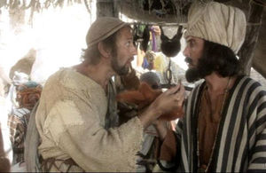

Monty Python
 De: La Frikipedia, la enciclopedia extremadamente seria.
De: La Frikipedia, la enciclopedia extremadamente seria.
Dioses nórdicos encarnados en la tierra cuan Jesucristos para traer la salvación a todos los código de Hammurabi y el caras de Bélmez, e inventaron el VHS, los calendarios de tías en bolas que se borra el tanga con la lengua, los bolis de diez colores y la fimosis. Después predicaron su evangelio a través de revelaciones como La vida de Brian, Los caballeros de la mesa cuadrada y sus locos seguidores o El sentido de la vida. Tras su muerte y ascensión al Valhalla son muchos los que han tenido visiones reveladoras provocadas por ellos desde el más allá. Así bajo su inspiración divina Francisco Franco escribió la comedía de situación Raza.
Dogmas de fe Python
 Hay que regatear habilmente con los vendedores de barbas

Policía montada de Canadá demostrando sus capacidades cantoras
- Nuestro color favorito es siempre el verde,por mucho que digamos el rojo,para hacernos los chulitos(algo parecido a lo que ocurre con las croquetas)
- Las bandas de inmigrantes no son nada comparadas con las de abuelas o las de señales de circular por la izquierda.
- Si te van a crucificar eres un cabronazo suertudo.
- El sentido de la vida es: leer algun libro comer sano, hacer deporte y todas esas chorradas
- Desconfía de los leñadores, nunca te agaches ante uno por muy macho que parezca.
- Los loros que no respiren, no se muevan y después de una descarga de 10000 voltios siga sin inmutarse estarán, definitivamente, muertos.
- El mayor compositor de la historia es Johann Gambolputty de von Ausfern -schplenden -schlitter -crasscrenbon -fried -digger -dangle -dungle -burstein -von -knacker -thrasher -apple -banger -horowitz -ticolensic -grander -knotty -spelltinkle -grandlich -grumblemeyer -spelterwasser -kürstlich -himbleeisen -bahnwagen -gutenabend -bitte -eine -nürnburger -bratwustle -gerspurten -mit -zweimache -luber -hundsfut -gumberaber -shönendanker -kalbsfleisch -mittler -raucher von Hautkopft of Ulm.
- Si pronuncias la frase que, traducida del inglés, reza así: "No me esperaba a la inquisición española" apareceran tres inquisidores españoles para torturarte.
- La policía montada de Canadá no tiene otra cosa que hacer que acompañar a coro a un desgraciado cantando "I'm a lumberjack..."
- En la verdadera "Última cena" de Miguel Ángel se puede apreciar un canguro, hay veintiocho dicípulos y tres Cristos.
- Detrás de las clínicas dentales donde todo son sonrisas se esconde una auténtica mafia de tráfico de empastes.
- Nunca digas que un tenedor está sucio en un restaurante de primera calidad. Recibirás la ira de Mungo.
- Antes de aprender a defenderse de un atacante armado con un palo con punta, en las clases de defensa personal hay que aprender a defenderse de un atacante armado con fruta fresca.
- Los tigres no son un virus. Y por sorprendente que parezca, viven en África.
- Honrarás a tu padre, a tu madre y a Pijus Magníficus.
- La Santa granada de Antioquía es efectiva contra conejos asesinos.
- Los psicólogos pueden ser unos obsesos sexuales.
- El chiste más gracioso del mundo escrito por Ernest Scribbler y utilizado como arma en la Segunda Guerra Mundial está enterrado en Berkshire, Gran Bretaña.
- Nunca se fíe de guías húngaras de idiomas, pueden ser engañosas.
- No todo el mundo tiene sombrero.
- Una golondrina africana no es migratoria, pero puede transportar cocos, mientras que una golondrina europea es migratoria pero no puede transportar cocos.
- Spam, spam, spam.
- Picaso nunca logró pintar ningún cuadro conduciendo una bicicleta.
- El déjà vu es la extraña sensación que a veces tenemos de vivir algo que ya nos ha pasado antes.
- El déjà vu es la extraña sensación que a veces tenemos de vivir algo que ya nos ha pasado antes.
- El déjà vu es la extraña sensación que a veces tenemos de vivir algo que ya nos ha pasado antes.
- El déjà vu es la extraña sensación que a veces tenemo... El déjà vu es la extraña sensación que a veces...El déjà vu es la extraña sensación que... El déjà vu es la extraña sensación que a veces tenemos de... El déjà vu es la extraña sensación que a veces tenemos de... El déjà vu es la extraña sensación que a veces tenemos de... El déjà vu es la extraña sensación que a veces tenemos de...El déjà vu es la extraña sensación que a veces tenemos de... El déjà vu es la extraña sensación que a veces tenemos de...El déjà vu es la extraña sensación que a veces tenemos de... El déjà vu es la extraña sensación que a veces tenemos de...El déjà vu es la extraña sensación que a veces tenemos de... El déjà vu es la extraña sensación que a veces tenemos de...El déjà vu es la extraña sensación que a veces tenemos de... El déjà vu es la extraña sensación que a veces tenemos de...
- La primera leccion de no dejarse ver es no levantarse o te atienes a que te disparen, te hagan explotar, colapsen una casa sobre ti, etc.
- Los pinguinos ocuparian ser de 70 pies de alto para tener el cerebro de un humano normal, pero en tamaño natural aun son mas inteligentes que los programadores de la BBC.
- Nunca dejes que un gumby sea tu doctor, aun si tu eres un gumby.
- Semprini es una palabra prohibida
- Todavia no hay nadie que salte el canal de la mancha.
- ¿Quieres un argumento de 5 o 10 minutos?
- El kamikaze escoces es el soldado mejor preparado psicologicamente.
- Si eres documentalista lleva un microfono extra, no valla haber alguien que te lo pida prestado.
- Timmy williams es la persona mas importante del mundo
Miembros
COmo todo grupo tiene miembros y los miembros que tiene os los voy a decir, son seis, no cinco ni siete, seis es el número. No se debe decir cinco, salvo para llegar al seis, el siete no sera nombrado.
John Cleese: (Juan Queso para los amigos) Líder de la organización que lidera el mundo desde las sombras, jefe de los del Jeins Bon. ¿O era James Bond?
Graham Chapman:(Graimito) persona que segun Terry Jones es el aguafiestas del grupo que decidió morirse un dia antes de que el grupo hiciera 20 años (dato verídico) controla todo desde el Valhala junto con Erik el vikingo
Eric Idle: Músico del grupo que es el encargado de poner los mensajes subliminales a las canciones, así cada vez que escuchas "Always look on the bright side of life" te entran ganas de suicidarte en solidaridad con Brian. Dicen de el que es el miembro mas sexy del grupo.
Michael Palin: Python bueno, que en realidad es el malo mas malo de todos los buenos ya que con su sonrisa de Angel y su bondad camuflada te atrae al lado oscuro de la fuerza
Terry Jones: AUnque todos se travisten el es el que mas lo hace y te destroza los timpanos con su ultrasonido que tiene por voz de mujer.
Terry Gilliam: Ahora director, antes animador del grupo, conocido sobretodo por el papel de Cardenal en la "Spanish Inquisition" se mantiene alejado de los focos porque si su piel divina entra en contacto con un exceso de luz se derrite.
Autor(es):
- Mklzapp
- Jowsh
- Doctor grijander
- Kcor
- Sirius
- Aque
- Roms
- Kebukai
- Juansaman
- Z
Frikipedia 2005-2016, Licencia
GFDL 1.2 - Extraído por FrikiLeaks